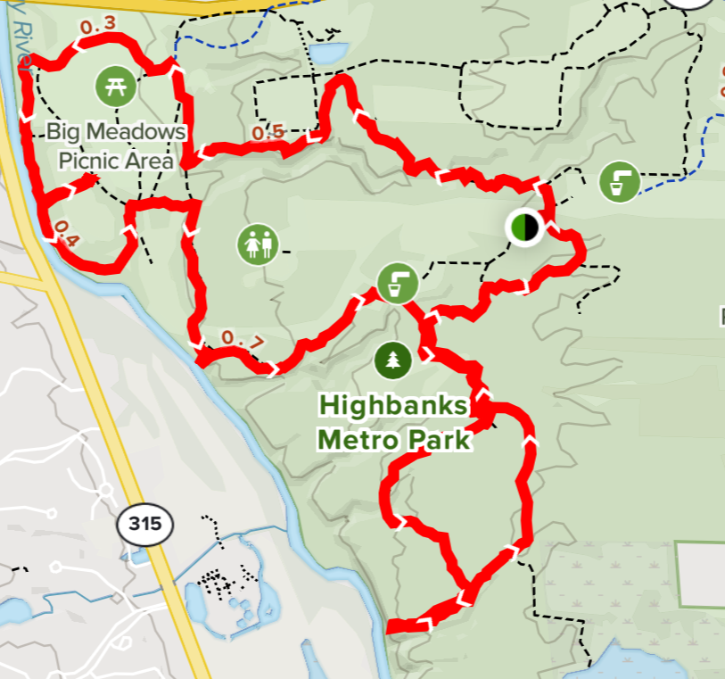

<div class="content background" role="main">  
    <div class="result_list_box">
        <div class= "row">
            <mat-card class= "result_list">
                <div class= "card_data row">
                    <div class= "col">
                        
                    </div>
                    <div class= "col info_list">
                        <h1>Dripping Rock, Overlook and Big Meadows Loop</h1>
                        <h5>Dripping Rock, Overlook and Big Meadows Loop is a 6 mile heavily trafficked loop trail located near Lewis Center, Ohio that features a river and is rated as moderate. The trail is primarily used for hiking, walking, running, and nature trips and is accessible year-round.</h5>
                        <h3>Rating 4.5/5</h3>
                        <ul>
                            <li>Length: 6.0 miles</li>
                            <li>Elevation Gain: 360 feet</li>
                            <li>Trail Type: Loop</li>
                            <li>Pets Allowed: Yes</li>
                            <li>Recommended Activities: Walking, Running, Hiking</li>
                        </ul>
                        <h2>Favorite: <button mat-icon-button (click)="toggleFavorite()">

                            <mat-icon
                              *ngIf="selected"
                              role="img">
                              favorite
                            </mat-icon>
                          
                            <mat-icon
                              *ngIf="!selected"
                              role="img">
                              favorite_border
                            </mat-icon>
                          
                          </button>
                        </h2>
                    </div>
                </div>
            </mat-card>
        </div>
    </div>
</div>
